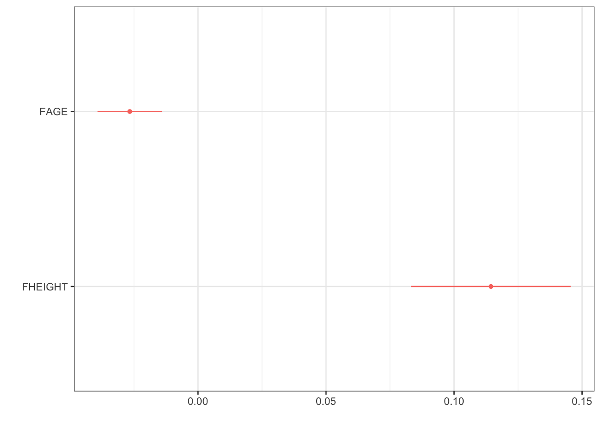
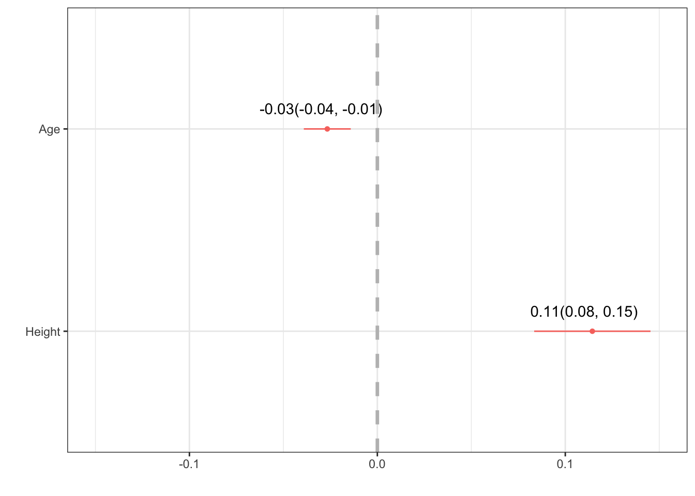
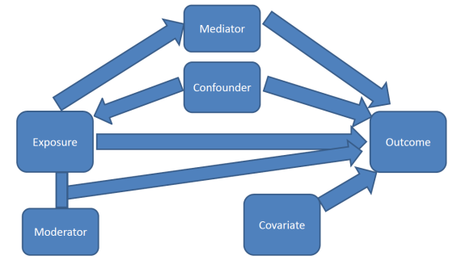

lm(FFEV1 ~ FAGE + FHEIGHT, data=fev)
Call:
lm(formula = FFEV1 ~ FAGE + FHEIGHT, data = fev)
Coefficients:
(Intercept) FAGE FHEIGHT
-2.76075 -0.02664 0.11440 Hopefully by now you have some motivation for why we need to have a robust model that can incorporate information from multiple variables at the same time. Multiple linear regression is our tool to expand our MODEL to better fit the DATA.
Now it’s no longer a 2D regression line, but a \(p\) dimensional regression plane.

This section uses functions from the
dotwhiskerandgtsummaryvisualize results from multiple regression models.
This chapter uses the following packages: gtsummary, performance, broom, knitr, dotwhisker
The mathematical model for multiple linear regression equates the value of the continuous outcome \(y_{i}\) to a linear combination of multiple predictors \(x_{1} \ldots x_{p}\) each with their own slope coefficient \(\beta_{1} \ldots \beta_{p}\).
\[ y_{i} = \beta_{0} + \beta_{1}x_{1i} + \ldots + \beta_{p}x_{pi} + \epsilon_{i}\]
where \(i\) indexes the observations \(i = 1 \ldots n\), and \(j\) indexes the number of parameters \(j=1 \ldots p\). This linear combination is often written using summation notation: \(\sum_{i=1}^{p}X_{ij}\beta_{j}\).
The assumptions on the residuals \(\epsilon_{i}\) still hold:
In matrix notation the linear combination of \(X\)’s and \(\beta\)’s is written as \(\mathbf{x}_{i}^{'}\mathbf{\beta}\), (the inner product between the vectors \(\mathbf{x}_{i}\) and \(\mathbf{\beta}\)). Then the model is written as:
\[ \textbf{y} = \textbf{X} \mathbf{\beta} + \mathbf{\epsilon} ,\]
and we say the regression model relates \(y\) to a function of \(\textbf{X}\) and \(\mathbf{\beta}\), where \(\textbf{X}\) is a \(n \times p\) matrix of \(p\) covariates on \(n\) observations and \(\mathbf{\beta}\) is a length \(p\) vector of regression coefficients.
Note: Knowledge of Matricies or Linear Algebra is not required to conduct or understand multiple regression, but it is foundational and essential for Statistics and Data Science majors to understand the theory behind linear models.
Learners in other domains should attempt to understand matricies at a high level, as some of the places models can fail is due to problems doing math on matricies.
Recall the goal of regression analysis is to minimize the unexplained/residual error. That is, to minimize the difference between the value of the dependent variable predicted by the model and the true value of the dependent variable.
\[ \hat{y_{i}} - y_{i}, \]
where the predicted values \(\hat{y}_{i}\) are calculated as
\[\hat{y}_{i} = \sum_{i=1}^{p}X_{ij}\beta_{j}\]
The sum of the squared residual errors (the distance between the observed point \(y_{i}\) and the fitted value) now has the following form:
\[ \sum_{i=1}^{n} |y_{i} - \sum_{i=1}^{p}X_{ij}\beta_{j}|^{2}\]
Or in matrix notation
\[ || \mathbf{Y} - \mathbf{X}\mathbf{\beta} ||^{2} \]
Solving this least squares problem for multiple regression requires knowledge of multivariable calculus and linear algebra, and so is left to a course in mathematical statistics.
The analysis in example Section 7.1 concluded that FEV1 in fathers significantly increases by 0.12 (95% CI:0.09, 0.15) liters per additional inch in height (p<.0001). Looking at the multiple \(R^{2}\) (correlation of determination), this simple model explains 25% of the variance seen in the outcome \(y\).
However, FEV tends to decrease with age for adults, so we should be able to predict it better if we use both height and age as independent variables in a multiple regression equation.
What direction do you expect the slope coefficient for age to be? For height?
Fitting a regression model in R with more than 1 predictor is done by adding each variable to the right hand side of the model notation connected with a +.
lm(FFEV1 ~ FAGE + FHEIGHT, data=fev)
Call:
lm(formula = FFEV1 ~ FAGE + FHEIGHT, data = fev)
Coefficients:
(Intercept) FAGE FHEIGHT
-2.76075 -0.02664 0.11440 Similar to simple linear regression, each \(\beta_{j}\) coefficient is considered a slope. That is, the amount \(Y\) will change for every 1 unit increase in \(X_{j}\). In a multiple variable regression model, \(b_{j}\) is the estimated change in \(Y\) after controlling for other predictors in the model.
mlr.dad.model <- lm(FFEV1 ~ FAGE + FHEIGHT, data=fev)
summary(mlr.dad.model)
Call:
lm(formula = FFEV1 ~ FAGE + FHEIGHT, data = fev)
Residuals:
Min 1Q Median 3Q Max
-1.34708 -0.34142 0.00917 0.37174 1.41853
Coefficients:
Estimate Std. Error t value Pr(>|t|)
(Intercept) -2.760747 1.137746 -2.427 0.0165 *
FAGE -0.026639 0.006369 -4.183 4.93e-05 ***
FHEIGHT 0.114397 0.015789 7.245 2.25e-11 ***
---
Signif. codes: 0 '***' 0.001 '**' 0.01 '*' 0.05 '.' 0.1 ' ' 1
Residual standard error: 0.5348 on 147 degrees of freedom
Multiple R-squared: 0.3337, Adjusted R-squared: 0.3247
F-statistic: 36.81 on 2 and 147 DF, p-value: 1.094e-13confint(mlr.dad.model) 2.5 % 97.5 %
(Intercept) -5.00919751 -0.51229620
FAGE -0.03922545 -0.01405323
FHEIGHT 0.08319434 0.14559974For the model that includes age, the coefficient for height is now 0.11, which is interpreted as the rate of change of FEV1 as a function of height after adjusting for age. This is also called the partial regression coefficient of FEV1 on height after adjusting for age.
Binary predictors (categorical variables with only 2 levels) get converted to a numeric binary indicator variable which only has the values 0 and 1. Whichever level gets assigned to be 0 is called the reference group or level. The regression estimate \(b\) then is the effect of being in group (\(x=1\)) compared to being in the reference (\(x=0\)) group.
Does gender also play a roll in FEV? Let’s look at how gender may impact or change the relationship between FEV and either height or age.
Note, the
fevdata set is in wide form right now, with different columns for mothers and fathers. First I need to reshape the data into long format, so gender is it’s own variable.
# a pivot_longer() probably would have worked here as well
fev_long <- data.frame(gender = c(fev$FSEX, fev$MSEX),
fev1 = c(fev$FFEV1, fev$MFEV1),
ht = c(fev$FHEIGHT, fev$MHEIGHT),
age = c(fev$FAGE, fev$MAGE),
area = c(fev$AREA, fev$AREA))
fev_long$gender <- factor(fev_long$gender, labels=c("M", "F"))
fev_long$area <- factor(fev_long$area, labels=c("Burbank", "Lancaster", "Long Beach", "Glendora"))So the model being fit looks like:
\[ y_{i} = \beta_{0} + \beta_{1}x_{1i} + \beta_{2}x_{2i} +\beta_{3}x_{3i} + \epsilon_{i}\]
where
lm(fev1 ~ age + ht + gender, data=fev_long)
Call:
lm(formula = fev1 ~ age + ht + gender, data = fev_long)
Coefficients:
(Intercept) age ht genderF
-2.24051 -0.02354 0.10509 -0.63775 In this model gender is a binary categorical variable, with reference group “Male”. This is detected because the variable that shows up in the regression model output is genderF. So the estimate shown is for males, compared to females.
Note that I DID NOT have to convert the categorical variable gender to a binary numeric variable before fitting it into the model. R (and any other software program) will do this for you already.
The regression equation for the model with gender is
\[ y = -2.24 - 0.02 age + 0.11 height - 0.64genderF \]
Note: The interpretation of categorical variables still falls under the template language of “for every one unit increase in \(X_{p}\), \(Y\) changes by \(b_{p}\)”. Here, \(X_{3}=0\) for males, and 1 for females. So a 1 “unit” change is females compared to males.
Let’s continue to model the FEV for individuals living in Southern California, but now we also consider the effect of city they live in. For those unfamiliar with the region, these cities represent very different environmental profiles.
table(fev_long$area)
Burbank Lancaster Long Beach Glendora
48 98 38 116 Let’s fit a model with area, notice again I do not do anything to the variable area itself aside from add it into the model.
lm(fev1 ~ age + ht + gender + area, data=fev_long) |> summary()
Call:
lm(formula = fev1 ~ age + ht + gender + area, data = fev_long)
Residuals:
Min 1Q Median 3Q Max
-1.32809 -0.29573 0.00578 0.31588 1.37041
Coefficients:
Estimate Std. Error t value Pr(>|t|)
(Intercept) -2.250564 0.752414 -2.991 0.00302 **
age -0.022801 0.004151 -5.493 8.59e-08 ***
ht 0.103866 0.010555 9.841 < 2e-16 ***
genderF -0.642168 0.078400 -8.191 8.10e-15 ***
areaLancaster 0.031549 0.084980 0.371 0.71072
areaLong Beach 0.061963 0.104057 0.595 0.55199
areaGlendora 0.121589 0.082097 1.481 0.13967
---
Signif. codes: 0 '***' 0.001 '**' 0.01 '*' 0.05 '.' 0.1 ' ' 1
Residual standard error: 0.4777 on 293 degrees of freedom
Multiple R-squared: 0.6529, Adjusted R-squared: 0.6458
F-statistic: 91.86 on 6 and 293 DF, p-value: < 2.2e-16Examine the coefficient names, areaLancaster, areaLong Beach and areaGlendora. Again R automatically take a categorical variable and turn it into a series of binary indicator variables where a 1 indicates if a person is from that area. Notice how someone from Burbank has 0’s for all of the three indicator variables, someone from Lancaster only has a 1 in the areaLancaster variable and 0 otherwise. And etc. for each other area.
| areaLancaster | areaLong.Beach | areaGlendora | area | |
|---|---|---|---|---|
| 1 | 0 | 0 | 0 | Burbank |
| 51 | 1 | 0 | 0 | Lancaster |
| 75 | 0 | 1 | 0 | Long Beach |
| 101 | 0 | 0 | 1 | Glendora |
Interpreting the regression coefficients are going to be compared to the reference group. In this case, it is the Burbank area. Why Burbank? Because that is what R sees as the first level. If you want something different, you need to change the factor ordering.
levels(fev_long$area)[1] "Burbank" "Lancaster" "Long Beach" "Glendora" The mathematical model is now written as follows,
\[ Y_{i} = \beta_{0} + \beta_{1}x_{1i} + \beta_{2}x_{2i} +\beta_{3}x_{3i} + \beta_{4}x_{4i} + \beta_{5}x_{5i} +\beta_{6}x_{6i}\epsilon_{i}\]
where
For someone living in Burbank, \(x_{4}=x_{5}=x_{6} =0\) so the model then is
\[Y_{i} = \beta_{0} + \beta_{1}x_{1i} + \beta_{2}x_{2i} +\beta_{3}x_{3i} + \epsilon_{i}\]
For someone living in Lancaster, \(x_{4}=1, x_{5}=0, x_{6} =0\) so the model then is
\[ Y_{i} = \beta_{0} + \beta_{1}x_{1i} + \beta_{2}x_{2i} +\beta_{3}x_{3i} + \beta_{4}(1) \\ Y_{i} \sim (\beta_{0} + \beta_{4}) + \beta_{1}x_{i} + \beta_{2}x_{2i} +\beta_{3}x_{3i} \epsilon_{i} \]
For someone living in Long Beach, \(x_{4}=0, x_{5}=1, x_{6} =0\) so the model then is
\[ Y_{i} = \beta_{0} + \beta_{1}x_{1i} + \beta_{2}x_{2i} +\beta_{3}x_{3i} + \beta_{5}(1) \\ Y_{i} \sim (\beta_{0} + \beta_{5}) + \beta_{1}x_{i} + \beta_{2}x_{2i} +\beta_{3}x_{3i} \epsilon_{i} \]
and the model for someone living in Glendora \(x_{4}=0, x_{5}=0, x_{6} =1\) is
\[ Y_{i} = \beta_{0} + \beta_{1}x_{1i} + \beta_{2}x_{2i} +\beta_{3}x_{3i} + \beta_{6}(1) \\ Y_{i} \sim (\beta_{0} + \beta_{6}) + \beta_{1}x_{i} + \beta_{2}x_{2i} +\beta_{3}x_{3i} \epsilon_{i} \]
In summary, each area gets it’s own intercept, but still has a common slope for all other variables.
\[y_{i.Burbank} = -2.25 - 0.023(age) + 0.10(ht) -0.64(female)\] \[y_{i.Lancaster} = -2.22 - 0.023(age) + 0.10(ht) -0.64(female)\] \[y_{i.Long.Beach} = -2.19 - 0.023(age) + 0.10(ht) -0.64(female)\] \[y_{i.Glendora} = -2.13 - 0.023(age) + 0.10(ht) -0.64(female)\]
Let’s look interpret the regression coefficients and their 95% confidence intervals from the main effects model again.
lm(fev1 ~ age + ht + gender + area, data=fev_long) |> tbl_regression()| Characteristic | Beta | 95% CI1 | p-value |
|---|---|---|---|
| age | -0.02 | -0.03, -0.01 | <0.001 |
| ht | 0.10 | 0.08, 0.12 | <0.001 |
| gender | |||
| M | — | — | |
| F | -0.64 | -0.80, -0.49 | <0.001 |
| area | |||
| Burbank | — | — | |
| Lancaster | 0.03 | -0.14, 0.20 | 0.7 |
| Long Beach | 0.06 | -0.14, 0.27 | 0.6 |
| Glendora | 0.12 | -0.04, 0.28 | 0.14 |
| 1 CI = Confidence Interval | |||
Beta coefficients for categorical variables are always interpreted as the difference between that particular level and the reference group.
The direct software output always tells you more information than what you are wanting to share with an audience. Here are some ways to “prettify” your regression output.
tidy(mlr.dad.model) |> kable(digits=3)| term | estimate | std.error | statistic | p.value |
|---|---|---|---|---|
| (Intercept) | -2.761 | 1.138 | -2.427 | 0.016 |
| FAGE | -0.027 | 0.006 | -4.183 | 0.000 |
| FHEIGHT | 0.114 | 0.016 | 7.245 | 0.000 |
tbl_regression(mlr.dad.model)| Characteristic | Beta | 95% CI1 | p-value |
|---|---|---|---|
| FAGE | -0.03 | -0.04, -0.01 | <0.001 |
| FHEIGHT | 0.11 | 0.08, 0.15 | <0.001 |
| 1 CI = Confidence Interval | |||
Consult the vignette for additional ways to modify the output to show measures such as AIC, \(R^{2}\) and the number of observations being used to fit the model.
With the function dwplot in the dotwhisker package we can create a forest plot.
dwplot(mlr.dad.model)
Further improvement on dwplot - extract the point estimate & CI into a data table, then add it as a geom_text layer.
text <- data.frame( # create a data frame
estimate = coef(mlr.dad.model), # by extracting the coefficients,
CI.low = confint(mlr.dad.model)[,1], # with their lower
CI.high = confint(mlr.dad.model)[,2]) %>% # and upper confidence interval values
round(2) # round digits
# create the string for the label
text$label <- paste0(text$estimate, "(", text$CI.low, ", " , text$CI.high, ")")
text # view the results to check for correctness estimate CI.low CI.high label
(Intercept) -2.76 -5.01 -0.51 -2.76(-5.01, -0.51)
FAGE -0.03 -0.04 -0.01 -0.03(-0.04, -0.01)
FHEIGHT 0.11 0.08 0.15 0.11(0.08, 0.15)text <- text[-1, ] # drop the intercept row
# ---- create plot ------
mlr.dad.model %>% # start with a model
tidy() %>% # tidy up the output
relabel_predictors("(Intercept)" = "Intercept", # convert to sensible names
FAGE = "Age",
FHEIGHT = "Height") %>%
filter(term != "Intercept") %>% # drop the intercept
dwplot() + # create the ggplot
geom_text(aes(x=text$estimate, y = term, # add the estimates and CI's
label = text$label),
nudge_y = .1) + # move it up a smidge
geom_vline(xintercept = 0, col = "grey", # add a reference line at 0
lty = "dashed", linewidth=1.2) + # make it dashed and a little larger
scale_x_continuous(limits = c(-.15, .15)) # expand the x axis limits for readability
One primary purpose of a multivariable model is to assess the relationship between a particular explanatory variable \(x\) and your response variable \(y\), after controlling for other factors.

Credit: A blog about statistical musings
Easy to read short article from a Gastroenterology journal on how to control confounding effects by statistical analysis.
Other factors (characteristics/variables) could also be explaining part of the variability seen in \(y\).
If the relationship between \(x_{1}\) and \(y\) is bivariately significant, but then no longer significant once \(x_{2}\) has been added to the model, then \(x_{2}\) is said to explain, or confound, the relationship between \(x_{1}\) and \(y\).
Steps to determine if a variable \(x_{2}\) is a confounder.
This means that the third variable is explaining the relationship between the explanatory variable and the response variable.
Note that this is a two way relationship. The order of \(x_{1}\) and \(x_{2}\) is invariant. If you were to add \(x_{2}\) to the model before \(x_{1}\) you may see the same thing occur. That is - both variables are explaining the same portion of the variance in \(y\).